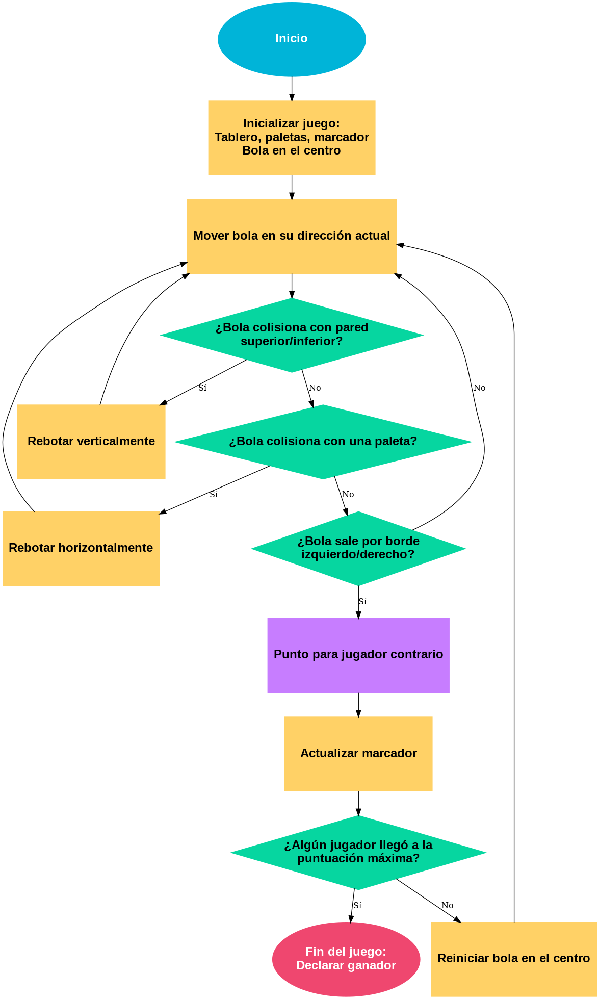

PONG
Historia del Juego
Pong fue uno de los primeros videojuegos de arcade de la historia. Fue desarrollado por Atari y lanzado en 1972,
diseñado por Allan Alcorn. Simula el tenis de mesa: dos jugadores controlan paletas verticales para devolver una pelota.
Su éxito impulsó la industria moderna de los videojuegos.
Reglas y Mecánicas
- Dos jugadores (o 1 vs CPU) controlan paletas verticales.
- La pelota rebota en paredes superior/inferior y en las paletas.
- Si la pelota pasa una paleta, el rival anota 1 punto.
- Gana quien alcance el puntaje objetivo (por ejemplo, 10).
- La pelota puede aumentar su velocidad con el tiempo.
Algoritmo del Juego
- Inicializar posiciones de paletas y pelota.
- Iniciar el bucle principal:
- Leer entradas de los jugadores (teclas arriba/abajo).
- Actualizar posiciones de paletas y pelota.
- Detectar colisiones:
- Si choca con pared superior/inferior → invertir dirección vertical.
- Si choca con paleta → invertir dirección horizontal.
- Si la pelota cruza un borde lateral → asignar punto al rival y reiniciar pelota.
- Comprobar si alguien alcanzó el puntaje objetivo.
- Si no, continuar el bucle hasta terminar la partida.
Diagrama de Flujo

Prompt para pong GiGi practica 7
Crea una versión web de PONG utilizando HTML, CSS y JavaScript puro, donde se pueda jugar con dos paletas (controladas con teclas W/S y flechas arriba y abajo), con detección de colisiones, rebotes y marcador. Practicamente todo el juego de 1972 tal y como lo conocemos pero hecho en web de la manera visual mas bonita y sencilla posible, lo mas apegado al original
Conversación con chatgpt sobre Pong